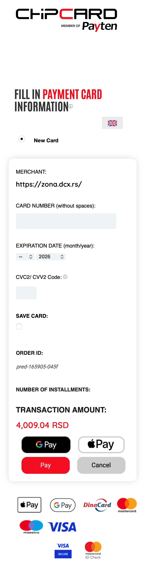
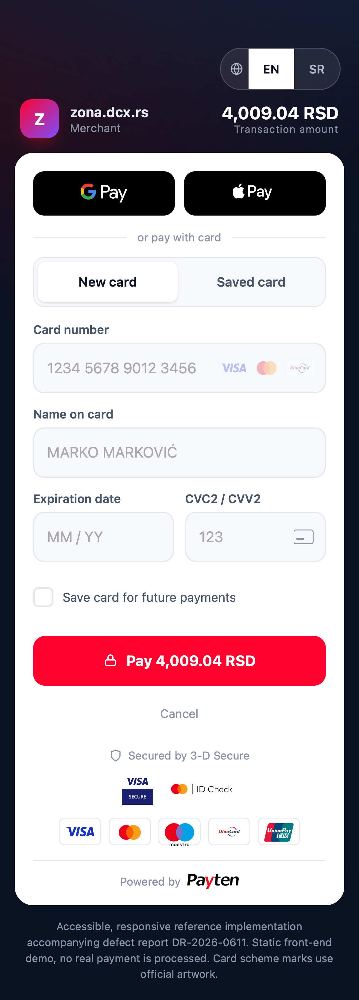

Chipcard / Payten / MerchantSafe Unipay hosted 3-D Secure payment page
Chipcard / Payten / MerchantSafe Unipay hostovana 3-D Secure platna stranica
| ID | Finding | Nalaz | Severity | Ozbiljnost | Standard | Standard |
|---|---|---|---|---|---|---|
| UX-01 | Horizontal overflow on every phone width | Horizontalni overflow na svim sirinama telefona | High | WCAG 1.4.10 | ||
| UX-02 | Zoom disabled via viewport meta | Zoom onemogucen preko viewport meta taga | High | WCAG 1.4.4 | ||
| UX-03 | Inputs below 16px cause iOS zoom-on-focus | Polja ispod 16px izazivaju iOS zoom na fokus | Medium | iOS Safari | ||
| UX-04 | Tap targets below minimum size | Tap targets ispod minimalne velicine | High | Apple HIG / WCAG 2.5.8 | ||
| UX-05 | No numeric keyboard; expiry as two dropdowns | Nema numericke tastature; expiry kao dva dropdown-a | Medium | web.dev | ||
| UX-06 | Card scheme logos low-resolution (see DR-2026-0611) | Logoi kartica niske rezolucije (vidi DR-2026-0611) | Medium | Brand rules |
Left: the current page on an iPhone (WebKit). Right: a responsive, accessible reference implementation built in Payten brand colors, with saved-card support and official card scheme artwork. Both render the same payment in the same engine.
Levo: trenutna stranica na iPhone-u (WebKit). Desno: responzivna, pristupacna referentna implementacija u Payten brend bojama, sa podrskom za sacuvane kartice i zvanicnim logoima kartica. Obe prikazuju isto placanje u istom engine-u.


Open the live interactive demoOtvori zivi interaktivni demo
The demo includes the New card and Saved card flows, a save-card option, live card formatting, scheme detection, working autofill, accessible validation, an EN/SR language switch, and official Visa / Mastercard / Maestro / DinaCard / UnionPay marks plus Visa Secure and Mastercard ID Check badges.
Demo sadrzi New card i Saved card tokove, opciju za cuvanje kartice, formatiranje kartice u realnom vremenu, detekciju seme, ispravan autofill, pristupacnu validaciju, EN/SR prekidac jezika, i zvanicne Visa / Mastercard / Maestro / DinaCard / UnionPay marke uz Visa Secure i Mastercard ID Check badzeve.
The page content is wider than the screen on all tested phone widths, forcing horizontal scrolling. Measured with Playwright (WebKit):
Sadrzaj stranice je siri od ekrana na svim testiranim sirinama telefona, sto primorava horizontalno skrolovanje. Mereno Playwright-om (WebKit):
| Device width | Sirina uredjaja | Screen | Ekran | Page width | Sirina sadrzaja | Overflow | Overflow |
|---|---|---|---|---|---|---|---|
| iPhone SE | 375px | 375px | 401px | yes | da | ||
| iPhone 14 | 390px | 390px | 403px | yes | da | ||
| iPhone 14 Pro Max | 430px | 430px | 432px | yes | da | ||
| Galaxy S20 | 360px | 360px | 398px | yes | da |
WCAG 2.2 SC 1.4.10 Reflow (Level AA): content must reflow without two-dimensional scrolling down to 320 CSS px.
Constrain the layout to max-width with fluid widths, remove fixed-width elements, and use box-sizing: border-box. The reference page has zero overflow from 360px upward.
Ograniciti layout na max-width sa fluidnim sirinama, ukloniti elemente fiksne sirine i koristiti box-sizing: border-box. Referentna stranica nema overflow od 360px navise.
The page ships this viewport meta tag, which blocks pinch-to-zoom:
Stranica salje ovaj viewport meta tag, koji blokira pinch-to-zoom:
<meta name="viewport" content="user-scalable=no, initial-scale=1,
maximum-scale=1, minimum-scale=1, width=device-width, height=device-height">
Both user-scalable=no and maximum-scale=1 prevent users from zooming, which is a barrier for low-vision users on a screen that contains small text and a CVC field.
I user-scalable=no i maximum-scale=1 sprecavaju korisnike da zumiraju, sto je prepreka za slabovide korisnike na ekranu koji sadrzi sitan tekst i CVC polje.
WCAG 2.2 SC 1.4.4 Resize Text (Level AA): text must be resizable up to 200% without loss of content or function.
Use <meta name="viewport" content="width=device-width, initial-scale=1"> and remove the scaling restrictions.
Koristiti <meta name="viewport" content="width=device-width, initial-scale=1"> i ukloniti ogranicenja skaliranja.
The card number, CVC and other text inputs use a 14px font. iOS Safari automatically zooms the page when a user focuses an input whose font size is below 16px, then leaves the page zoomed in, which combined with UX-02 traps the layout.
Polja za broj kartice, CVC i ostala tekstualna polja koriste font od 14px. iOS Safari automatski zumira stranicu kada korisnik fokusira polje cija je velicina fonta ispod 16px, i ostavlja stranicu zumiranom, sto u kombinaciji sa UX-02 zaglavljuje layout.
Set form inputs to a minimum font-size: 16px. All inputs in the reference page are 16px.
Postaviti polja na minimum font-size: 16px. Sva polja u referentnoj stranici su 16px.
Several interactive elements are too small to tap reliably (measured on iPhone 14, WebKit):
Vise interaktivnih elemenata je premalo za pouzdan tap (mereno na iPhone 14, WebKit):
| Element | Element | Size | Velicina | Issue | Problem |
|---|---|---|---|---|---|
| Card type radio | Radio za tip kartice | 12x12px | below WCAG 24px minimum | ispod WCAG 24px minimuma | |
| Save card checkbox | Checkbox za cuvanje kartice | 20x20px | below WCAG 24px minimum | ispod WCAG 24px minimuma | |
| Expiry month / year selects | Select za mesec / godinu | 19px tall | below WCAG 24px minimum | ispod WCAG 24px minimuma | |
| Close (x) buttons | Dugmad za zatvaranje (x) | 22x51px | below 24px in one dimension | ispod 24px u jednoj dimenziji | |
| Card / CVC inputs | Polja kartica / CVC | 42 and 34px tall | below Apple 44px target | ispod Apple 44px targeta |
Apple Human Interface Guidelines: minimum 44x44 pt hit target. WCAG 2.2 SC 2.5.8 Target Size (Minimum, Level AA): 24x24 CSS px; SC 2.5.5 (Enhanced, AAA): 44x44 px.
Give interactive controls a minimum hit area of 44x44px (or at least the 24px WCAG minimum with adequate spacing). The reference page has no target below 44px.
Dati interaktivnim kontrolama minimalnu povrsinu dodira od 44x44px (ili bar WCAG minimum od 24px uz dovoljan razmak). Referentna stranica nema target ispod 44px.
Card number and CVC inputs do not set inputmode="numeric", so mobile users get a full alphabetic keyboard for digit-only fields. The expiry date uses two <select> dropdowns (month and year), which is slower on mobile and can break autofill.
Polja za broj kartice i CVC ne postavljaju inputmode="numeric", pa mobilni korisnici dobijaju punu alfabetsku tastaturu za polja koja primaju samo cifre. Datum isteka koristi dva <select> dropdown-a (mesec i godina), sto je sporije na mobilnom i moze pokvariti autofill.
Google web.dev, Payment and address form best practices: use inputmode="numeric" for numeric fields; prefer a single input over select menus for dates.
Add inputmode="numeric" and proper autocomplete values (cc-number, cc-exp, cc-csc), and use a single MM / YY field. The reference page does all of this.
Dodati inputmode="numeric" i ispravne autocomplete vrednosti (cc-number, cc-exp, cc-csc), i koristiti jedno MM / YY polje. Referentna stranica radi sve ovo.
The card scheme logos are GIF/JPEG raster images around 77x46px with no srcset, so they appear pixelated on Retina screens. This was also raised as BUG-03 in defect report DR-2026-0611.
Logoi kartica su GIF/JPEG raster slike oko 77x46px bez srcset-a, pa deluju pikselizirano na Retina ekranima. Ovo je prijavljeno i kao BUG-03 u izvestaju DR-2026-0611.
The reference page uses the official Visa (2021) and Mastercard (2016) vector marks with correct brand colors (Visa Blue #1434CB; Mastercard red #EB001B, yellow #F79E1B, overlap #FF5F00), plus the official DinaCard, Maestro and UnionPay vectors, and the official Visa Secure and Mastercard ID Check vector badges. Vector marks stay sharp at any density and let the dev team respect each scheme's minimum size and clear-space requirements.
Referentna stranica koristi zvanicne Visa (2021) i Mastercard (2016) vektorske marke sa ispravnim brend bojama (Visa Blue #1434CB; Mastercard crvena #EB001B, zuta #F79E1B, preklop #FF5F00), uz zvanicne DinaCard, Maestro i UnionPay vektore, i zvanicne Visa Secure i Mastercard ID Check vektorske badzeve. Vektorske marke ostaju ostre na svakoj gustini i omogucavaju dev timu da postuje minimalnu velicinu i clear-space pravila svake seme.
Exact minimum-size and clear-space rules are defined by each scheme's brand center (see Sources).
Tacna pravila minimalne velicine i clear-space-a definise brand centar svake seme (vidi Izvore).
The reference implementation uses the Payten brand palette sampled from payten.com: primary red #FF0230, navy #0B1224, with a purple accent #7C4DFF. The visual direction is a clean, Stripe-style single-card checkout. Final typography should use the licensed Payten brand typeface (Myriad Pro) where available, with a system fallback.
Referentna implementacija koristi Payten brend paletu uzetu sa payten.com: primarna crvena #FF0230, navy #0B1224, sa ljubicastim akcentom #7C4DFF. Vizuelni pravac je cist, Stripe-style checkout u jednoj kartici. Finalna tipografija treba da koristi licencirani Payten brend font (Myriad Pro) gde je dostupan, uz system fallback.
All measurements were taken against the live page using Playwright driving the WebKit engine (the engine every iOS browser uses), across device widths of 360, 375, 390 and 430 CSS px. Overflow, computed font sizes, tap-target bounding boxes and the viewport meta tag were read directly from the rendered DOM. The reference implementation was verified in the same engine to have zero horizontal overflow, 16px inputs and no tap target below 44px.
Sva merenja su radjena nad zivom stranicom koriscenjem Playwright-a koji upravlja WebKit engine-om (engine koji koristi svaki iOS browser), na sirinama uredjaja od 360, 375, 390 i 430 CSS px. Overflow, izracunate velicine fontova, bounding box-ovi tap targeta i viewport meta tag su citani direktno iz renderovanog DOM-a. Referentna implementacija je u istom engine-u verifikovana da nema horizontalni overflow, da ima 16px polja i nijedan tap target ispod 44px.